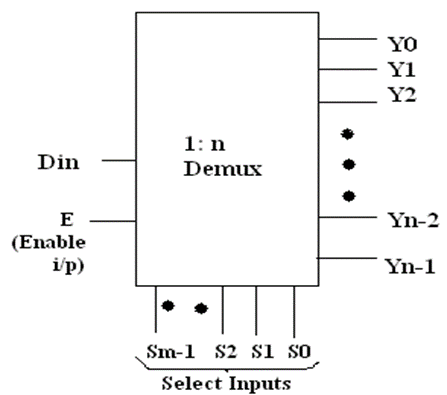

Design and Implementation of logic functions using decoder IC 74138
1. Verification of IC.
2. Boolean function implementation.
F(A,B,C ) = Σm( 0,3,6,7 )
3. Full Adder
- Demultiplexer is a logic circuit used to perform exactly reverse function performed by multiplexer.
- It accepts a single input and distributes among several outputs. The selection of a particular output line is controlled by a set of selection line. Hence, demultiplexer is equivalent to a single pole multiple way switch.
- There are ‘n’ output lines & ‘2m’ is the number of selection line whose bit combinations determine which output to be selected.
Block Diagram:

Decoder:
A decoder is a combinational circuit. Figure shows block diagram of decoder. It has ‘m’ inputs and ‘n’ outputs where ‘n= 2m’ outputs. Decoder is identical to demultiplexer without any data input.
Block Diagram:
Difference between Multiplexer, Demultiplexer & Decoder
Encoder & Decoder:
1. Encoders are used to encode given digital number into different numbering format .like decimal to BCD Encoder, Octal to Binary.
2. Decoders are used to decode a coded binary word like BCD to seven segment decoder.
3. Thus encoder and decoder are application specific logic develop, we can not use any type of input for any encoder and decoder.
4. Need to select input according to encoder and decoder being selected for a particular application as mention in examples above.
Advantages:
1. The decoder provides best implementation whenever there are many outputs of the combinational circuit and each o/p of the function (or its complement) is required to be expressed with a small no. of minterms.
2. The decoder can function as demux. If the Enable i/p line is taken as Din (data i/p) .
Disadvantages:
Since decoder method requires an OR gate for each o/p function, so there is new hardware used. And it is always advisable to use minimum hardware as we come across problems like propagation delay of gates.
Applications:
Decoder is worthily used for decoding binary information and memory interfacing. It is used for the implementation of Boolean function.
1] VERIFICATION OF IC 74138:
We use IC 74138 which accepts 3 binary weighted inputs (A0, A1, A2) and when enabled provides mutually exclusive active low outputs (y0-y7). It features 3 Enable i/ps. Two active low (G2A, G2B) and one active high (G1). Every output will be high unless G2A, G2Bare low and G1 is high. It has demultiplexing capability and multiple enable i/ps for easy expansion.
Function table of 3:8 decoder:
2] CASCADING OF IC 74138:
The enable i/p G1 active high of IC 74138 is used for cascading. for cascading 2 IC’s ,the enable i/p G1 of first IC is connected to G1 enable i/p of second IC through a NOT gate. This enable i/p is used as MSB select i/p line A3. the other three select input lines of both IC’s (A0,A1,A2) are also shorted to select input lines of second IC to get single i/p select lines (A0,A1,A2).
The i/p line A3 is used to enable /disable the 2 IC 74138 decoders. When A3=0, first IC is enabled and second is disabled. Thus the first decoder will generate minterms from 0000 to 0111 as o/p and the second decoder will generate nothing. When A3=1, the enable conditions are reversed and thus second decoder IC will generate minterms 1000 to 1111.
Function Table of 4:16 decoder using IC 74138 (3:8 decoder):
Circuit Diagram:
3] FUNCTION IMPLEMENTATION:
The procedure for implementation of combinational circuit by means of a decoder and ‘OR’ gates requires that the Boolean function fir the circuit be expressed in Sum of Minterms. These forms can be obtained by expanding the function. A decoder is then chosen which generates all the minterms of n i/p variables. The i/p to each OR gate are selected from the decoder outputs according to the minterms list in each function.
For example, F1=∑m (1, 3, 5, 7) and F2=∑m (2, 3, 6, 7)
First of all we need to decide on which type of decoder the above Boolean function can be implemented. The highest minterm is 7 and minimum no. of bits required to represent it in binary form are 3. So we have 3 select lines in 3:8 decoders so we can use IC 74138. To implement the function we require AND and NAND gate (7408 & 7400). As the o/p of the decoder IC 74138 are active low and we need to get o/p active high at the o/p pin of the function SUM and CARRY when respective minterms are selected.
Implementation of Full Adder:
Truth Table:From the truth table we can write the functions for Sum and Carry as,
For SUM = Σ m (1, 2, 4, 7) and
For CARRY = Σ m (3, 5, 6, 7)
Circuit Diagram:
or
Follow the below steps
1. Connections were given as per circuit diagram.2. Logical inputs were given as per truth table.
3. Observe the logical output and verify with the truth tables.
Here you can embed an interactive simulation tool or provide links to simulation resources.
Q.1] What are the enable inputs used for?
G1: Active high enable. Must be high (1) for the decoder to operate.
G2A and G2B: Active low enables. Both must be low (0) for the decoder to operate. If the enable inputs are not correctly configured, all outputs will remain high regardless of the input values.
Q.2] What are common applications of decoders?
• Memory Address Decoding: Selecting memory locations in RAM or ROM.
• Data Routing: Directing data to different parts of a circuit.
• Display Systems: Driving 7-segment displays.
• Microprocessor Control: Decoding instructions or control signals.
Q.3] What is the difference between decoder &Demultiplexer?
- Reference 1: “Digital Fundamentals” by Floyd & Jain
- Reference 2: R. P. Jain, “Modern Digital Electronics”, 3rd Edition, Tata McGraw-Hill
- Reference 3: 3. Malvino, D.Leach“Digital Principles and Applications”, 5th edition, Tata McGraw- Hill